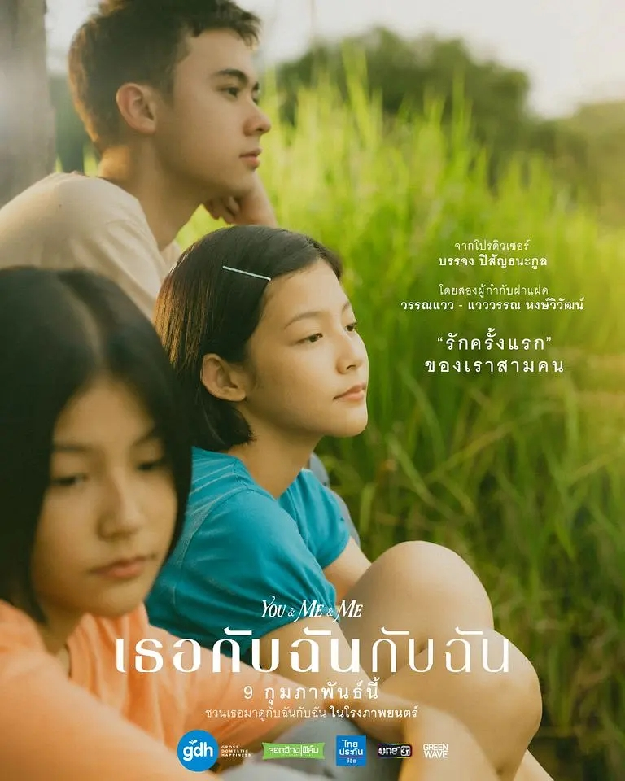
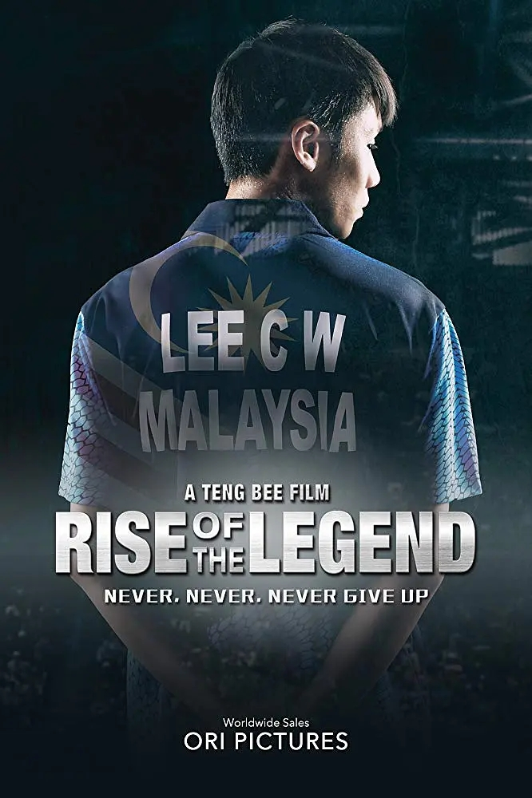
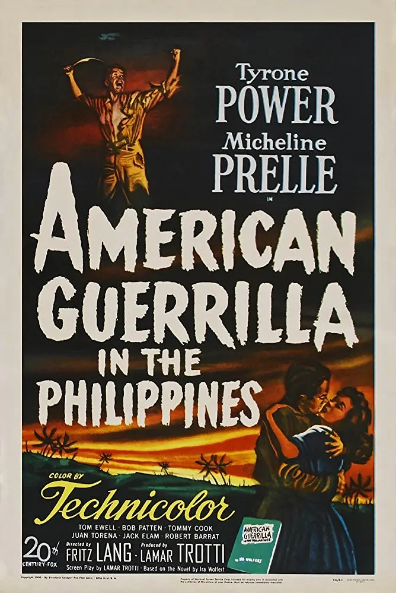
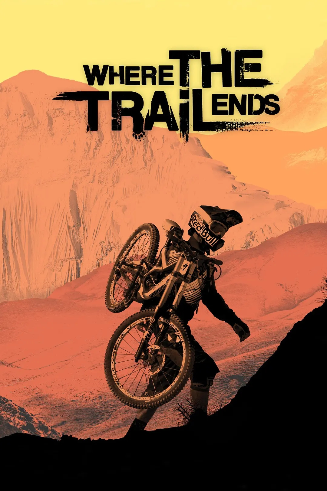
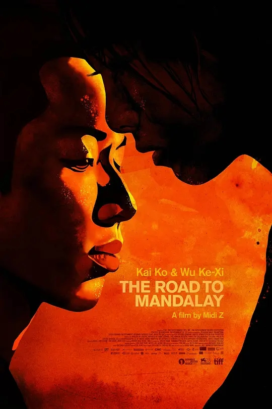
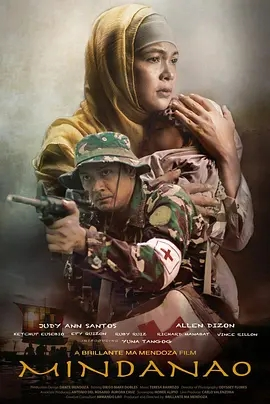

 1999年，一对双胞胎姐妹情窦初开，在一次互相冒充身份为对方考试时，认识了少年马克，帅气阳光的他同时拨动了两姐妹的心弦。 本片是双胞胎导演宛薇·洪维瓦塔娜和薇婉·洪维瓦塔娜共同编导的长片处女作，灵感源于她们的个人经历。她们将少女即将迈入的青春期与全球面临的“千年虫”互文， 透过时间门槛，暗喻这对姐妹在家庭、友情、爱情方面即将面临的考验，抒写一曲青涩三角恋的清新小调。新人演员泰蒂娅·吉拉庞恩斯普一人分饰两角， 毫无破绽地刻画了这对迥异性格的双胞胎姐妹银幕形象。
 电影改编自羽坛天王李宗伟的真实经历，讲述了一个永不言弃的励志感人故事。李宗伟从小就喜欢羽毛球，但是贫困的家境和父亲的反对， 让打球的梦想成为一种奢望。李宗伟背着父亲偷偷练球，还差点儿被地下赌场利用，但他的毅力也终于打动了父亲，开始了正规的羽球训练，并被选入国家队。 然而幸运的日子没有多久，打击接踵而来，队友排挤、落选、失恋，他更是在国际大赛中遇到劲敌，频频落败。背负着重重压力的李宗伟面对强大对手，选择了再次出发……
 故事发生于一九四二年春天，紧接着从菲律宾回来的道格拉斯·麦克阿瑟将军和他的队伍被封锁在奔赴澳大利亚的途中， 一艘被炸沉了太平洋战舰上活下来的人奋力挣扎游到了岸边。船长告诉他们，如果他们能够找到自己的方式达到两百公里之外的德尔蒙特， 他们就拥有最高等级的优先权通过封锁。船长建议他们兵分几路，以保证安全。屈克·帕尔玛和机务员吉米·米歇尔最后终于抵达了泪提岛上的塔科班机场。 在一所美国军事学校里，帕尔玛遇到了珍妮·马丁兹，她正着急地要去找到一位掌管人事的官员，要求上前线去帮助一位亲戚…
 2012年9月19日，全世界数一数二的自行车展INTER BIKE在美国的拉斯维加斯开幕。而一场酝酿已久的风暴在拉斯维加斯著名酒店The Palms Hotel附属的The Pearl Theatre影院爆发。 在这个全世界山地车车迷的盛大日子，堪称自行车电影史上最大投资的电影《Where the trail ends》在这里举办了首映礼！2012红牛山地史诗大片《Where The Trail Ends Red Bull》 拍摄历时2年， 在新疆戈壁、在犹他北部、在阿根廷卡法亚特、在尼泊尔秘境Mustang这些销魂的地方奔腾着。这是一部讲述世界顶级自由山地自行车手的电影，这些雄心勃勃的山地自行车手们在世界各地挑战各种险峻的地形，挑战自己的极限和大自然。
 忧郁的热带，女孩莲青（吴可熙 饰）遇见少年阿国（柯震东 饰），都是从缅甸跋涉至曼谷的偷渡客，他们连边界都穿过了，却迟迟等不到一纸身分。想新生他方为人，如今却飘荡城市边缘成鬼，日子剩下反覆的劳动， 小吃店、成衣厂、工厂熔炉，无处可洩的闷热，高烧一般的爱。当连呐喊也瘖哑，吸毒、残身，贩卖身体⋯⋯。一切不是旧，只是逐渐败坏，不是没有期望，而是竟然还有期望。探底了，又还不够底，少年少女眼神纯真，身强志坚， 就此一步一步通往无光的所在。银幕再见柯震东，赵德胤续《冰毒》后持续以影像射击，大量真实移工入镜，长镜头视野，近距离人生，写实影像锤打底层生活成炽烫影像，触目都生烟，偏又有爱情浇铸其中，卑微又仰望，炼成钢，更成绕肠柔，所求无非一点馀温，经过便都是馀生。
 影片围绕一个照顾罹患癌症女儿的母亲塞玛展开，她的丈夫是投身棉兰老岛内战前线的战斗军人，时刻面临着家人生离死别的塞玛平日会为女儿讲述她最喜爱的兄弟屠龙神话，以抚慰她的病痛。菲律宾名导布里兰特·曼多萨运用残酷写实与涂鸦动画之间的交叉互文， 表达的不止是战争带来的痛苦和创伤，更是残存的希望和人性的光芒。